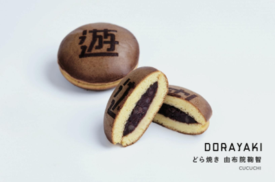
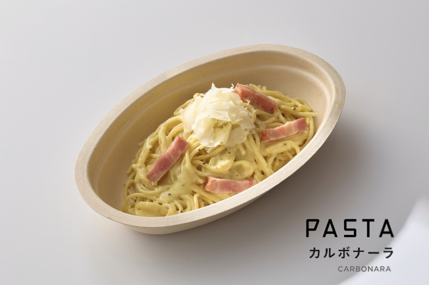
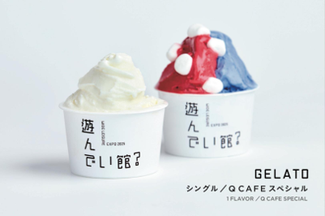

<!DOCTYPE html>
<html lang = "ja"></html>
<head>
    <meta charset="UTF-8">
    <meta name="viewport" content="width=device-width, initial-scale=1.0">
    <title>関西万博グルメガイド</title>
    <!-- CSSファイルのリンク -->
  <link rel="stylesheet" href="style.css">

<style>
   body { font-family: sans-serif; background-color:  #fefefe; color: #333; }
   header { background-color: #0078D7; color: white;padding: 1em; text-align: center; }
    section { margin: 2em; }
    .dish { margin-bottom: 1.5em; }
    img { max-width: 100%; height: auto; border-radius: 8px; }
  </style>
</head>
<body>
    <header>
        <h1>関西万博グルメガイド</h1>
        <p>2025年大阪で開催される世界の美味が集結！</p>
    </header>

    <section>
    <h2>おすすめグルメ紹介</h2>

    <div class="dish fade" id="wagyu">
    <h3>どら焼き</h3>
      
      <p>世界に誇る餡子がギッシリ詰まった美味そうなどら焼き</p>
    </div>


    <div class="dish fade" id="wagyu">
      <h3>パスタ</h3>
      
      <p>世界に誇る日本のパスタ。とろけるような食感が魅力。</p>
    </div>

 


   <div class="dish">
      <h3>ソフトクリーム</h3>
      
      <p>世界に誇る日本のソフトクリーム。まろやかな食感が魅力。</p>
    </div>


    </section>
    <footer style="text-align:center; padding:1em; background-color:#eee;">
    <p>© 2025 関西万博グルメガイド</p>
    <p><a href="index.html">トップページへ戻る</a></p>
</footer>
<!-- ✅ JavaScript追加部分 -->
  <script>
    window.addEventListener("DOMContentLoaded", () => {
      const dishes = document.querySelectorAll(".dish");
      dishes.forEach((dish, index) => {
        dish.style.opacity = "0";
        dish.style.transform = "translateY(20px)";
        setTimeout(() => {
          dish.style.transition = "opacity 0.8s ease, transform 0.8s ease";
          dish.style.opacity = "1";
          dish.style.transform = "translateY(0)";
        }, 400 + index * 300); // 順番に表示
      });
    });
  </script>

</body>
</html>
    
